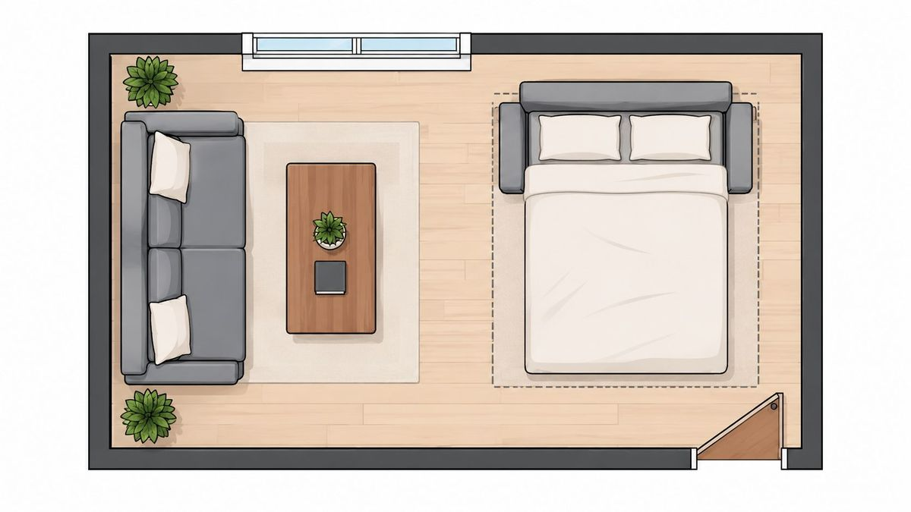

дивану-кровати с местом 1400×2000 мм нужно 2 100–2 300 мм от стены в разложенном виде и 900 мм свободного прохода перед ним. Розетки у дивана ставят на 150–300 мм от пола, свет — на 1 100–1 300 мм. Ошибка в 200 мм превращает гостиную в комнату, где каждый вечер двигают столик, а переделка розеток после ремонта стоит 8 000–20 000 руб.
Размеры: диван и раскладка
| Параметр | Значение | Что учесть |
|---|---|---|
| Спальное место | 1200–1600×1900–2000 мм | для двоих — от 1400 мм |
| Глубина сиденья | 550–700 мм | глубже 750 мм — сидеть неудобно |
| Высота сиденья | 400–450 мм | ниже 380 мм — тяжело вставать |
| Раскладка вперёд | +900–1 100 мм к глубине | еврокнижка — 1 400–1 600 мм |
| Полная длина в разложенном виде | 2 050–2 300 мм | замерять от стены |
Диван глубиной 1 000 мм в сложенном виде и 2 100 мм в разложенном требует комнаты не меньше 3 000 мм по короткой стороне, если перед ним ещё нужен проход 900 мм.
Механизмы
| Механизм | Раскладка | Цена | Особенность |
|---|---|---|---|
| Еврокнижка | вперёд, 1 400–1 600 мм | 35 000–90 000 руб. | бельевой ящик, простая конструкция |
| Клик-кляк | вперёд, 900–1 100 мм | 25 000–60 000 руб. | 3 положения, тонкий матрас |
| Пантограф | вверх, 300–500 мм | 45 000–120 000 руб. | место экономит, но нужна высота |
| Выкатной | вперёд, 1 000–1 200 мм | 40 000–100 000 руб. | ровное спальное место |
Пантограф экономит площадь, но требует 250–400 мм над спинкой и не подходит под окно. Еврокнижка — самый ремонтопригодный вариант: механизм меняется за 3 000–7 000 руб.
Планировка и проходы

| Зона | Минимум | Комфорт |
|---|---|---|
| Проход перед диваном | 700 мм | 900–1 000 мм |
| Проход между диваном и столиком | 400 мм | 500–600 мм |
| От дивана до ТВ | 2 000 мм | 2 500–3 500 мм |
| От разложенного дивана до мебели | 600 мм | 800–900 мм |
Столик перед диваном должен отодвигаться одной рукой: на колёсах или лёгкий. Тяжёлый журнальный стол на 40 кг каждый вечер отодвигать не будут — его просто оставят в зоне раскладки.
Розетки и свет у дивана
| Элемент | Высота | Количество |
|---|---|---|
| Розетки для зарядок | 150–300 мм от пола | 2–4 шт. по бокам |
| Розетка для торшера | 300–600 мм | 1–2 шт. |
| Выключатель света | 900–1 000 мм | у входа и у дивана |
| Бра над диваном | 1 100–1 300 мм | 2 шт. симметрично |
Розетки за диваном бесполезны, если диван придвинут к стене: их перекрывает спинка. Ставят сбоку, на расстоянии 100–200 мм от края дивана, или выводят на подлокотник.
Хранение белья
| Место | Объём | Что хранить |
|---|---|---|
| Бельевой ящик еврокнижки | 60–120 л | 2 комплекта постельного, плед |
| Ниша в подлокотнике | 10–20 л | пульт, зарядки, книга |
| Комод 800 мм | 120–180 л | бельё, подушки |
| Антресоль над диваном | 80–150 л | сезонные вещи |
Один комплект двуспального белья занимает 25–35 л. Для гостиной со спальным местом нужен ящик от 80 л — иначе бельё переезжает на антресоли в коридоре.
Если спать каждый день
| Параметр | Для гостей | Для сна каждый день |
|---|---|---|
| Толщина матраса | 80–120 мм | 140–180 мм |
| Наполнитель | ППУ 25 кг/м³ | ППУ 35 кг/м³ или пружины |
| Жёсткость | средняя | средняя или выше средней |
| Топпер | не нужен | обязателен, 50–80 мм |
| Срок службы механизма | 5–7 лет | 10–12 лет |
Ежедневная раскладка — это 700–1 000 циклов в год. Механизм с ресурсом 10 000 циклов выдержит 10–14 лет, дешёвый на 3 000 циклов — 3–4 года. При покупке смотрят паспорт: ресурс указывают в циклах, а не «гарантия 18 месяцев».
Спать на диване с матрасом 80 мм дольше месяца — прямая дорога к боли в спине: нагрузка на поясницу распределяется неравномерно. Топпер 50–80 мм с памятью решает проблему за 6 000–30 000 руб. и продлевает жизнь обивке.
Смета 2026
| Позиция | Бюджет | Оптимум |
|---|---|---|
| Диван-кровать 1400×2000 | 35 000–55 000 руб. | 70 000–120 000 руб. |
| Матрас-топпер | 6 000–12 000 руб. | 15 000–30 000 руб. |
| Столик на колёсах | 5 000–10 000 руб. | 12 000–25 000 руб. |
| Торшер, бра | 4 000–8 000 руб. | 10 000–20 000 руб. |
| Перенос розеток | 8 000–12 000 руб. | 12 000–20 000 руб. |
Итого 58 000–97 000 руб. в бюджете и 119 000–215 000 руб. в оптимуме. Перенос розеток после чистовой отделки — самый дорогой пункт: штроба, шпаклёвка и покраска участка стены.
Высота потолка тоже ограничивает: пантографу нужно 250–400 мм над спинкой, а двухъярусная кровать-чердак в гостиной 2,5 м делает верхний ярус неудобным. Перед покупкой замеряют не только пол, но и расстояние от пола до потолка в точке раскладки.
Порядок планирования
- Замерить комнату и нарисовать план в масштабе с диваном в двух положениях.
- Проверить проход 900 мм перед разложенным диваном.
- Определить место розеток сбоку от дивана, а не за спинкой.
- Выбрать механизм под площадь: еврокнижка или пантограф.
- Предусмотреть хранение белья от 80 л.
- Купить столик на колёсах и лёгкий торшер.
Чек-лист перед покупкой
- Длина в разложенном виде 2 050–2 300 мм помещается от стены.
- Перед диваном остаётся 900 мм прохода.
- Розетки сбоку, на 150–300 мм от пола.
- Бельевой ящик не меньше 80 л.
- Столик отодвигается одной рукой.
Частые вопросы
Какой диван-кровать выбрать для гостиной 18 м²?
Еврокнижку с местом 1400×2000 мм: она занимает 2 100–2 200 мм в разложенном виде и оставляет проход 900 мм. Пантограф сэкономит место, но требует высоты над спинкой.
Сколько места нужно перед диваном?
Минимум 700 мм, комфортно — 900–1 000 мм. Меньше 600 мм — придётся переставлять столик каждый вечер.
Где ставить розетки у дивана?
Сбоку, на 150–300 мм от пола и 100–200 мм от края дивана. За спинкой розетки перекрываются и недоступны.
Что лучше: еврокнижка или клик-кляк?
Еврокнижка: ровное спальное место, ящик 60–120 л и ремонтопригодный механизм. Клик-кляк дешевле, но матрас тоньше и спать на нём дольше недели неудобно.
Нужен ли топпер на диван-кровать?
Да, если спать каждый день. Топпер 5–8 см выравнивает стыки и продлевает срок службы обивки. Стоит 6 000–30 000 руб.
Можно ли ставить диван-кровать под окном?
Можно, если батарея не мешает раскладке и есть 100–150 мм от стены. Пантограф под окном не поставить — ему нужна высота 250–400 мм.
Какой матрас нужен для ежедневного сна на диване?
Толщиной 140–180 мм на ППУ 35 кг/м³ или с независимыми пружинами, плюс топпер 50–80 мм. Тонкий матрас 80–100 мм подходит только для гостей.
Сколько циклов выдерживает механизм еврокнижки?
Качественный — 10 000–15 000 циклов, это 10–14 лет при ежедневной раскладке. Дешёвый — 3 000 циклов, около 3–4 лет.
Можно ли спать на клик-кляке каждый день?
Нежелательно: матрас 60–80 мм и жёсткая перекладина по центру дают нагрузку на поясницу. Клик-кляк — для гостей, для ежедневного сна нужна еврокнижка с матрасом 140–180 мм.
Источники
Материал подготовлен с опорой на следующие документы и данные:
Дисклеймер
Материалы журнала «Ремонт на примерах» носят информационный характер. Приведённые цены, сроки и нормативы являются ориентировочными: они зависят от региона, состояния объекта, уровня исполнителей и текущей рыночной ситуации, поэтому не могут служить точной сметой или гарантией результата. Перед началом работ проконсультируйтесь со специалистами и проверяйте актуальные требования нормативных документов. Редакция не несёт ответственности за решения, принятые на основании этих материалов.